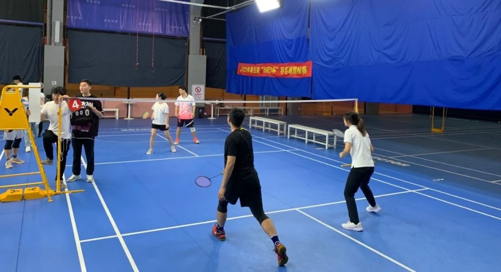
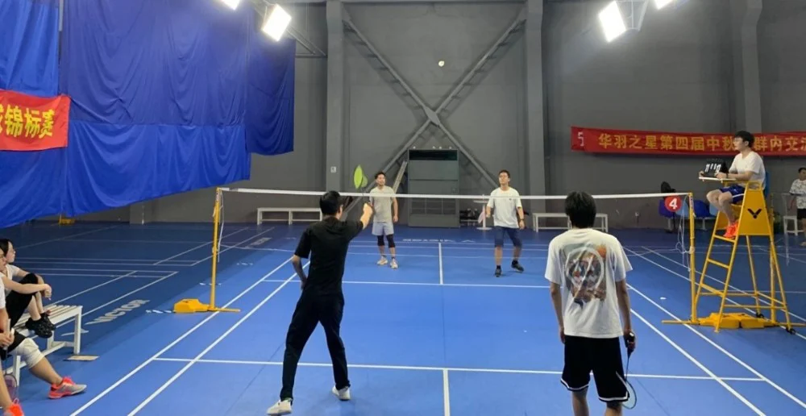
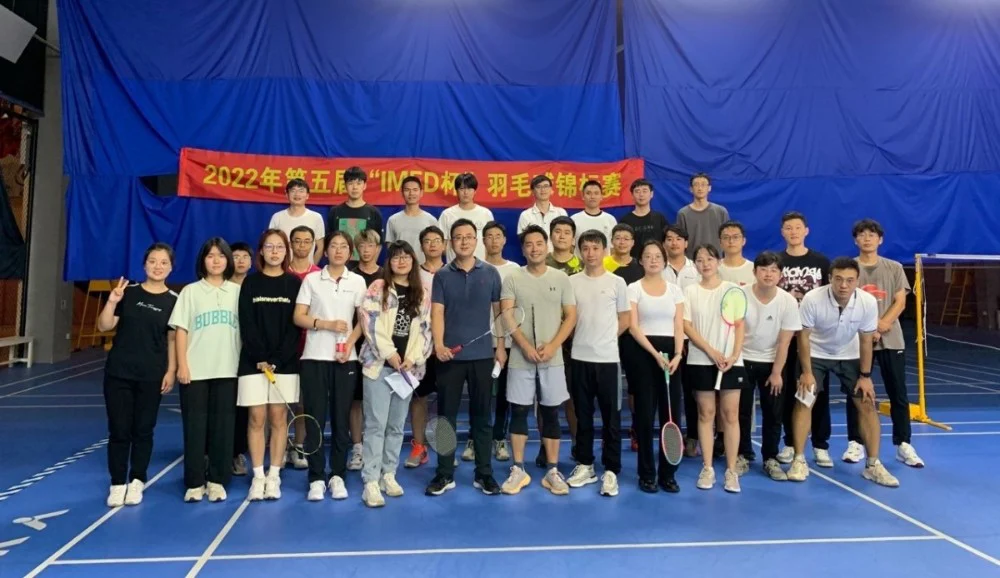

迎国庆 强体魄 促团结
--2022年第五届“IMED杯”羽毛球锦标赛
值此国庆来临之际，我组为了更好的贯彻国家全民健身精神，为了丰富同学们的课余文化生活，提高同学们的身体素质，进一步增强团队凝聚力，2022年9月28日下午，我组第五届“IMED杯”羽毛球锦标赛在张军体育馆拉开了帷幕。本届比赛新赛制，新体验，新征程，全组成员对本次比赛充满了期待。
我组沙登峰、许聪等成员作为本次活动的负责人，在比赛前期做出了充分的准备并制定了全新的赛制。本次活动按照组内成员共分A、B、C、D、E五组，为保证比赛的精彩，该赛制规定每组必须拥有一名女生、有且仅有一名“超能力者”。每组6名成员，可以分为一组混双、两组男双。混双获胜得3分，男双获胜得2分，最后分数高者的队伍为本届冠军。同时为保证比赛的公平、公正，由其中轮空的一组担当本场裁判。因此，根据各组实力分配差异，赛前的人员调整策略尤为重要。只有实力与谋略共同兼备，才能脱颖而出。

随着比赛正式开始，选手们开始斗智斗勇，“田忌赛马”的趣事接连发生。本着“友谊第一、比赛第二”的原则，比赛场上展开了激烈的对决，本来轻松的氛围也逐渐紧张起来，选手们斗志昂扬，奋尽全力，激烈角逐，队员们的汗水缓缓从脸颊留下，加油声此起彼伏。在第一场比赛中A组对战B组，C组对战D组。由牟磊师兄带领的B组凭借娴熟的技术、默契的配合，顺利拿下开场第一个大满贯，获得了7：0的优异成绩大胜由郝晋奎师兄带领的A组。而C组与D组以5:2的成绩结束第一场。在接下来2个多小时的激战的比赛中，B组一直稳居第一，C组也不甘示弱，而A组成员却凭借着越战越勇，永不服输的心态，在后续比赛中奋力追赶，最终拿下14分，获得本次比赛的第三名。由超能力者牟磊师兄与超能力者马韶东老师所带领的B组和C组，分别拿下19分，并列第一。根据赛制规定，相同比分组可由超能力者们进行一场男双比赛，来决出本次比赛的第一名。两队不愧是超能力者们，各种令人惊叹的扣杀，给足了大家强烈的视觉冲击，现场喝彩声、加油声、欢呼声接连不断。最终由马老师率领的C组荣获本次比赛的冠军，牟磊师兄率领的B组获得了亚军。

人生处处皆赛场，最是拼搏动人心。在全体成员的努力与拼搏中，本届羽毛球比赛取得了圆满成功。通过本次比赛，增强了我组成员的凝聚力，极大地燃起了同学们对于体育锻炼的热情，在比赛中充分展现我组团结、专注、坚持的文化风貌。虽然比赛落下帷幕，但IMED学子将会在未来的科研生活中，继续发扬坚持与不懈、激情与活力的体育精神！
